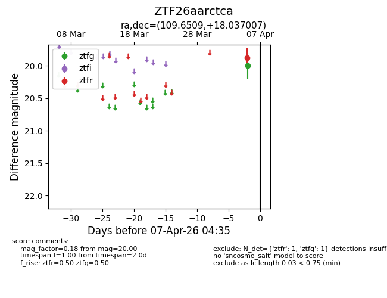
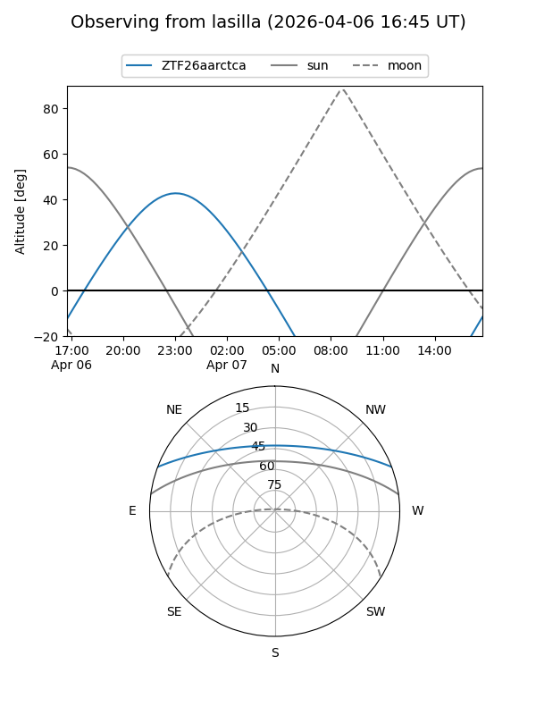
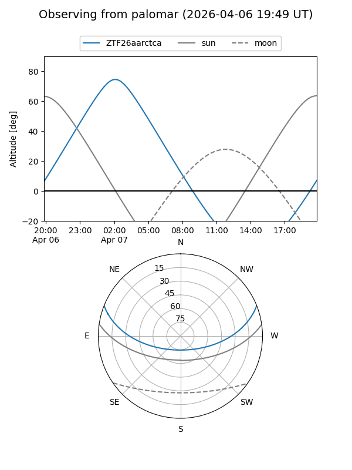
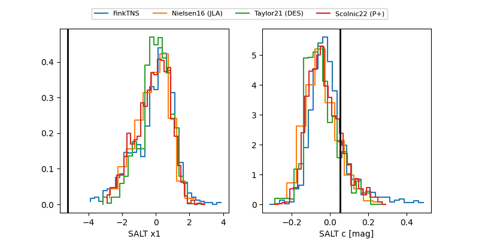

ZTF26aarctca
Target ZTF26aarctca at 2026-04-07 04:40
Aliases and brokers:
FINK: link
Lasair: link
ALeRCE: link
alt names
ZTF26aarctca (ztf,fink_ztf)
Coordinates:
equatorial (ra, dec) = 109.6509,+18.03701
equatorial (HMS+DMS) = 07:18:36.22,+18:02:13.23
galactic (l, b) = (199.5688,+13.96098)
Flags:
Photometry:
last ztfg=20.00, ztfr=19.88
1 ztfg, 1 ztfr detections
Lightcurve

Visibility


Additional plots
